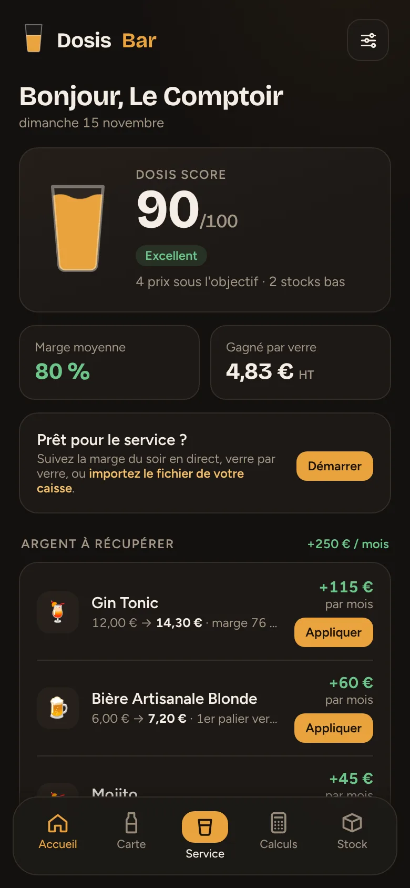
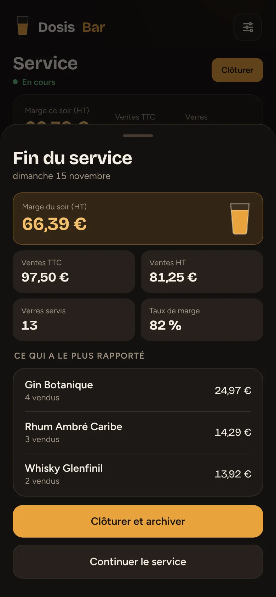
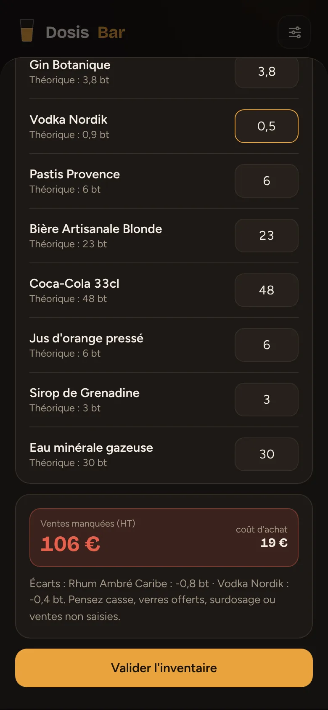

Ce que chaque verre vous rapporte vraiment.
Dosis Bar calcule la marge de chaque verre, suit la soirée en direct et retrouve l'argent qui file entre deux services. Essayez avec une de vos bouteilles.
Un centilitre de trop dans chaque verre, c'est de ventes perdues par an, sur cette seule bouteille.
Calculé avec votre verre ci-dessus, pour 10 verres de ce produit par soir, 6 soirs sur 7. Dosis Bar vous montre ces fuites pour chaque produit, et l'inventaire vous dit où elles se trouvent.
Une soirée avec Dosis Bar.
Pas un logiciel de plus à apprendre : votre soirée, telle qu'elle se passe déjà, avec les chiffres en plus.
-
18 h
Vous ouvrez.
Le Dosis Score vous dit en un chiffre comment va votre carte. Les prix trop bas sont listés avec ce qu'ils vous coûtent par mois. Un bouton suffit pour les corriger.

-
20 h
Le service démarre.
Un tap par verre vendu. La marge de la soirée monte en direct et le stock baisse tout seul. Vos barmen n'ont accès qu'au service : ils ne voient jamais vos prix d'achat.

-
1 h
Vous fermez.
Le bilan s'affiche : ventes, marge, ce qui a le plus rapporté. Vous avez une caisse ? Importez son fichier de ventes, Dosis Bar fait le reste.

-
Lundi
Vous faites l'inventaire.
Scannez vos bouteilles avec l'appareil photo du téléphone. Dosis Bar compare avec ce qui a été vendu et chiffre l'écart en euros : casse, verres offerts, doses trop généreuses.

Pensé pour le comptoir, pas pour la cuisine.
Les logiciels de gestion parlent de plats et de fiches techniques. Dosis Bar parle de verres, de doses et de cocktails.
| Logiciels de restauration | Dosis Bar | |
|---|---|---|
| Ce qu'on calcule | Le coût d'un plat | La marge de chaque verre, dose et cocktail |
| Pour démarrer | Rendez-vous, démonstration, installation accompagnée | Deux minutes, seul, depuis votre téléphone |
| Pendant le service | Rien, les chiffres arrivent le lendemain | La marge de la soirée en direct |
| L'inventaire | Des listes à remplir | Les bouteilles scannées, l'écart chiffré en euros |
| Votre équipe | Tout le monde voit tout, ou personne | Le barman sert, le patron voit les marges |
| Le prix | De 49 € à plusieurs centaines d'euros par mois, souvent avec des frais d'installation | De 29,99 à 49 € HT par mois, sans frais ni engagement |
Né derrière le comptoir.
Dosis Bar est créé par Paris Rhum Club, importateur de rhums et de boissons cubaines à Paris depuis 2020. En livrant des bars, une question revenait toujours : « combien je gagne vraiment sur ce verre ? »
Les outils existants parlaient de cuisine, de fiches techniques et de rendez-vous commerciaux. Nous avons fait celui que nous aurions voulu offrir à nos clients.
Un prix simple, sans engagement.
Par établissement, toute votre équipe incluse. Pas de frais d'installation, pas de rendez-vous commercial. Le mode essai reste gratuit pour découvrir l'app.
Bar pilote
29,99 €HT par mois
2 mois offerts, puis ce prix est bloqué à vie. Pour les premiers bars qui testent Dosis Bar avec nous et nous donnent leur avis.
Devenir bar pilotePlaces limitées
Dosis Bar
49 €HT par mois
- Marge de chaque verre et cocktail
- Dosis Score et prix conseillés
- Service en direct, même sans réseau
- Inventaire en scannant les bouteilles
- Import du fichier de la caisse
- Barmen sans accès aux prix d'achat
- Bénéfice réel avec vos charges fixes
Option Restauration : + 20 € HT par mois. Fiches plats, préparations, coût de l'assiette, pour restaurants, fast-foods et traiteurs.
Créer mon comptePro Bientôt
79 €HT par mois
- Tout Dosis Bar
- Option Restauration incluse
- Lecture automatique des factures fournisseurs
- Connexion directe à votre caisse
Vos questions.
Faut-il installer quelque chose ?
Non. Dosis Bar s'ouvre dans le navigateur de votre téléphone, de votre tablette ou de votre ordinateur. Vous pouvez l'ajouter à l'écran d'accueil pour l'ouvrir comme une application.
Et si le réseau du bar coupe ?
Le service continue. Les ventes sont gardées sur le téléphone et envoyées dès que la connexion revient.
Mes barmen voient-ils mes marges ?
Non. Vous les invitez avec un code : ils n'ont accès qu'au mode Service, sans les prix d'achat ni les marges.
Ma caisse est-elle compatible ?
Si elle sait exporter les ventes en fichier CSV ou Excel, oui : SumUp, Flatpay, Zelty, Lightspeed, L'Addition, Square, Tiller et les autres. Dosis Bar reconnaît les colonnes et relie les noms à votre carte. Sans caisse, le mode Service fait le travail.
Combien ça coûte ?
Le mode essai est gratuit. L'abonnement Dosis Bar coûte 49 € HT par mois et par établissement, toute l'équipe incluse, sans engagement. Les premiers bars pilotes ont 2 mois offerts puis 29,99 € HT par mois, prix bloqué à vie.
Où sont mes données ?
En Europe, sur des serveurs sécurisés. Elles vous appartiennent et ne sont jamais revendues. Tout est expliqué dans la politique de confidentialité.